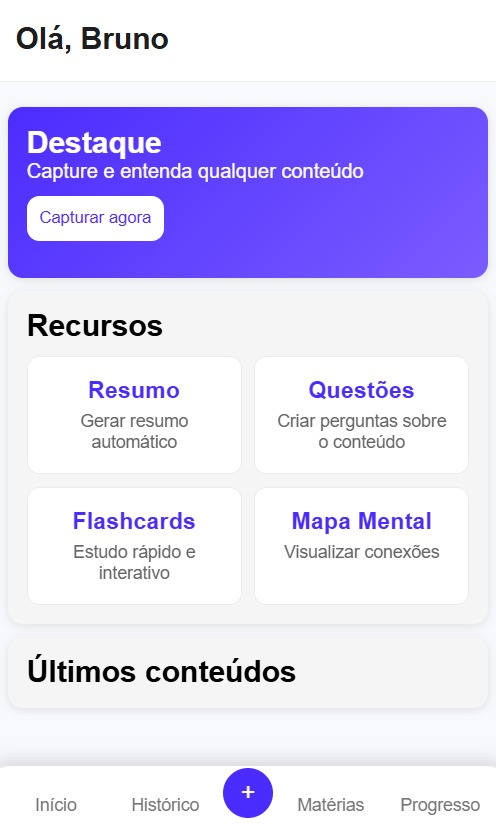
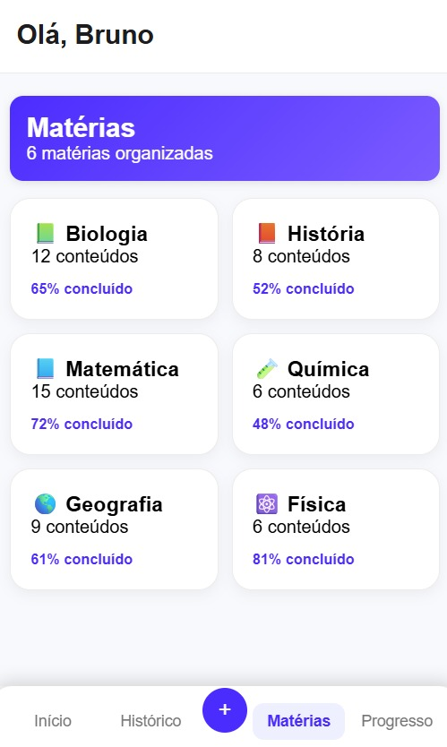
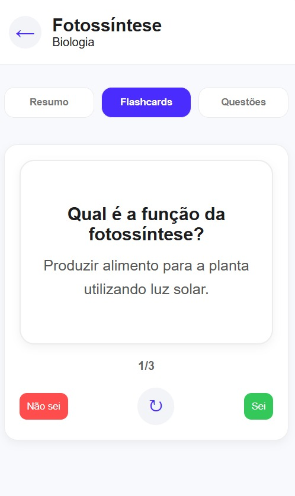

Capture
Fotografe conteúdos de uma lousa, apostila, caderno, projetor ou qualquer material legível.
NEXTAGE × JOVI
Estude a partir do que você já tem em mãos.
Fotografe uma lousa, apostila, caderno ou projetor. O StudyLens utiliza inteligência artificial para interpretar o conteúdo e transformá-lo em uma experiência de estudo personalizada.
A SOLUÇÃO
O StudyLens foi desenvolvido para o Challenge JOVI com o objetivo de transformar a câmera do smartphone em uma ferramenta ativa de aprendizagem. Muitos estudantes fotografam lousas, apostilas e materiais para consultar depois, mas essas capturas acabam dispersas e pouco aproveitadas. O StudyLens utiliza inteligência artificial para interpretar essas imagens e transformá-las em conteúdos organizados para estudo.
Fotografe conteúdos de uma lousa, apostila, caderno, projetor ou qualquer material legível.
A inteligência artificial identifica a matéria e interpreta o conteúdo capturado.
Transforme o conteúdo em recursos como resumos, questões e flashcards.
COMO FUNCIONA
O StudyLens transforma uma simples captura em uma experiência de estudo personalizada.
Fotografe o conteúdo que você está estudando.
A inteligência artificial reconhece a matéria e o conteúdo presente na imagem.
O conteúdo pode ser transformado em diferentes recursos para facilitar seus estudos.
Revise, pratique e acompanhe sua evolução ao longo da sua jornada de estudos.
PÚBLICO-ALVO
O StudyLens foi pensado principalmente para jovens estudantes que precisam lidar diariamente com grandes volumes de conteúdo. A solução é relevante para esse público porque transforma registros feitos com a câmera em materiais organizados para revisão e aprendizagem, reduzindo a dependência de fotos dispersas na galeria.
GALERIA
Uma visão da experiência que estamos desenvolvendo.



NOSSA EQUIPE
Uma equipe dedicada a transformar tecnologia em experiências mais úteis para estudantes.
Desenvolvimento Front-End e integração
UX/UI e desenvolvimento
Desenvolvimento e documentação
CONTATO
Entre em contato com a equipe NEXTAGE para conhecer mais sobre nossa solução.